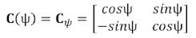
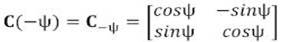

Our portable devices are getting more and more fun to use, due in part to new generations of augmented and virtual reality applications. If you look at the software source code at the heart of these AR & VR apps, you’ll discover a common component: a mathematical model relating the position and orientation of your portable device within an earth frame of reference. Perhaps the three most common are Euler angles, rotation matrices and quaternions. This discussion will focus on the Euler angles and rotation matrices. We’ll follow up with quaternions in Part 2.
Figure 1: Local earth versus the body frame
Let’s arbitrarily choose the phone screen X,Y coordinate system as our rotating frame of reference for this discussion. You can intuitively see that any X,Y point (Z assumed zero) on the phone screen will map to some X, Y, Z point in the earth frame of reference. It is also clear that the Cartesian axes in the phone (or body) frame of reference will only rarely align themselves with the local earth frame axes. Since the position offset, R, doesn’t affect orientation, we can collapse the figure down to:
Figure 2: Using a common origin for both earth and body frames
Now let’s remove the phone from the picture and focus just on points in the X-Y plane. The figure below shows the earth frame rotated into the body frame by an angle Psi (ψ).
Figure 3: The X-Y plane illustrates rotation from earth into body frame about the Z axis
You probably first saw a figure like this in your high school geometry or trig course. It allows us to map any point “A” in any standard X,Y Cartesian system to any other X,Y Cartesian system, which is rotated from it by some angle Psi (ψ), with a simple linear transformation. To see how, let’s deconstruct that figure using a number of right triangles.
Figure 4: Physical justification for terms in the rotation matrix
If you study Figure 4, you can see that the rotation angle, ψ, is present in each of the 4 right triangles we added. Additionally, the hypotenuse of each triangle is either xb or yb. Given that information, we can see how to compute xe and ye from xb and yb:
|
xe = xb cos(Y) - yb sin(Y) |
(Eqn. 1) |
|
ye = xb sin(Y) + yb cos(Y) |
(Eqn. 2) |
In matrix form:
|
Aearth = C(-ψ) Abody |
(Eqn. 3) |
The inverse of which is:
| Abody = C(ψ) Aearth | (Eqn. 4) |
where Aearth and Abody are of the form [x y]T and:
|  | (Eqn. 5) |
|  | (Eqn. 6) |
All other relationships included in this discussion can be similarly mapped to a diagram of the rotation. The analysis also extends naturally to three dimensions. If Aearth and Abody are of the form [x y z]T, then:
|
(Eqn. 7) |
|
|
(Eqn. 8) |
We will use the three dimensional form in the remainder of this discussion. In both two and three dimensional cases, C(ψ) and C(-ψ) are known as rotation matrices.
Notice that C(ψ) is the transpose of C(-ψ), and vice-versa: C(ψ)T = C(-ψ). This is a special property of all rotation matrices. You can reverse the sense of rotation simply by taking the transpose of the original matrix.
|
C(ψ) C(-ψ) = I3x3 |
(Eqn. 9) |
Where I3x3 is simply the identity matrix:
|
(Eqn. 10) |
This also implies that the inverse of a rotation matrix is simply its own transpose:
|
C(ψ)-1 = C(ψ)T |
(Eqn. 11) |
Similar relationships hold for rotations in the X-Z (about the Y axis) plane:
Figure 5: The X-Z plane illustrates rotation about the Y axis
|
xe = xb cos(θ) + zb sin(θ) |
(Eqn. 12) |
|
ze = - xb sin(θ) + zb cos(θ) |
(Eqn. 13) |
|
Aearth = C(-θ) Abody |
(Eqn. 14) |
|
Abody = C(θ) Aearth |
(Eqn. 15) |
|
(Eqn. 16) |
|
|
|
(Eqn. 17) |
and for rotations in the Z-Y (about the X axis) plane:
Figure 6: The Y-Z plane illustrates rotation about the X axis
|
ye = yb cos(Φ) - zb sin(Φ) |
(Eqn. 18) |
|
ze = yb sin(Φ) + zb cos(Φ) |
(Eqn. 19) |
|
Aearth = C(-Φ) Abody |
(Eqn. 20) |
|
Abody = C(Φ) Aearth |
(Eqn. 21) |
|
(Eqn. 22) |
|
|
(Eqn. 23) |
Phi, Theta and Psi (Φ, θ and ψ) rotations in sequence can map a point in any right-hand-rule (RHR) 3-dimensional space into any other RHR 3-dimensional space.
A rotation from earth by body frame about Z, then Y then X axes (the “aerospace” sequence) is represented by:
|
(Eqn. 24) |
The composite rotation matrix is computed simply by multiplying the three individual matrices in the specified order. Consistent with the discussion above, the inverse of this expression is:
|
(Eqn. 25) |
Collectively, Φ, θ and ψ are known as Euler angles. You may also see Φ, θ and ψ referred to as “roll”, “pitch” and “yaw” respectively. The subscript “RPY” in the expression above refers to roll-pitch-yaw, and “YPR” refers to yaw-pitch-roll.
Euler angles are sometimes sub-divided into “Tait-Bryan” angles (in which rotations occur about all three axes) and “Proper” Euler angles (in which the first and third axes of rotation are the same). Regardless of which type you use, it is important to specify the order of the rotations – which IS significant. In the table below, the right-most rotation is performed first, consistent with the matrix operations that will be required to implement the rotation. Possible variants are:
|
Alpha |
Angles |
Comments |
|
|
YRP |
ψ-Φ-θ |
Tait-Bryan angles (AKA Nautical or Cardan angles) |
All of these are sometimes referred to simply as “Euler Angles” |
|
YPR |
ψ-θ-Φ |
||
|
PYR |
θ-ψ-Φ |
||
|
PRY |
θ-Φ-ψ |
||
|
RYP |
Φ-ψ-θ |
||
|
RPY |
Φ-θ-ψ |
||
|
RYR |
Φ-ψ-Φ |
Proper Euler Angles |
|
|
RPR |
Φ-θ-Φ |
||
|
PYP |
θ-ψ-θ |
||
|
PRP |
θ-Φ-θ |
||
|
YRY |
ψ-Φ-ψ |
||
|
YPY |
ψ-θ-ψ |
||
A full discussion of Euler angles is beyond the scope of this article. But some key points you need to take away are:
If you define a “reference orientation” for any object, then you can define its current orientation as some rotation relative to that reference. Tracking orientation over time is then equivalent to tracking rotation from that reference over time. Because Euler angles are relatively easy to visualize, they enjoyed early popularity in a number of fields.
Rotation matrices don’t require a master’s degree to be able to use them. Anyone with a college freshman geometry class under their belt can figure them out. They don’t have the ambiguities associated with Euler angles, and can be found at the heart of many algorithms. But you need 9 numbers for each rotation in this form. That can chew up a lot of storage. A better representation is the “quaternion”, which is explored in Representing Orientation: Part 2.
Continue to Rotations and Orientation: Part 2.

{kind=link}
{kind=link}
{kind=link}
{kind=link}
{kind=link}
{kind=link}
{kind=link}
{kind=link}
{kind=link}
{kind=link}
{kind=link}
{kind=link}
{kind=link}
{kind=link}
{kind=link}